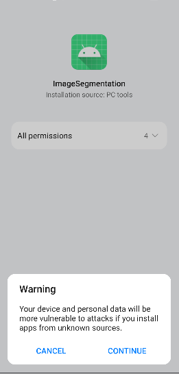

Android Application Development Based on Java Interface
Android Java Whole Process Model Conversion Model Loading Inference Application Data Preparation Beginner Intermediate Expert

Overview
It is recommended that you start from the image segmentation demo on the Android device to understand how to build the MindSpore Lite application project, configure dependencies, and use related Java APIs.
This tutorial demonstrates the on-device deployment process based on the image segmentation demo on the Android device provided by the MindSpore team.
Selecting a Model
Select an image segmentation model.
Click here to download the Android image segmentation model.
This example describes how to use Java APIs.
Scan the QR code below or directly download the APK file corresponding to this sample, and deploy it on an Android device.
Deploying an Application
The following describes how to build and execute an on-device image segmentation task on MindSpore Lite.
Running Dependencies
Android Studio 3.2 or later (Android 4.0 or later is recommended.)
Android SDK 26 or later (installed by Android Studio by default)
JDK 1.8 or later (installed by Android Studio by default)
Building and Running
Load the sample source code to Android Studio and install the corresponding SDK. (After the SDK version is specified, Android Studio automatically installs the SDK.)

Connect to an Android device and runs the image segmentation application.
Connect to the Android device through a USB cable for debugging. Click
Run 'app'to run the demo on your device.
For details about how to connect the Android Studio to a device for debugging, see https://developer.android.com/studio/run/device.
Android Studio can identify the mobile phone only when USB debugging mode is enabled on the mobile phone. For Huawei phones, enable USB debugging mode by choosing Settings > System & updates > Developer options > USB debugging.
On the Android device, click Continue. After the installation is complete, you can view the local album and the segmentation result of the image taken by the camera.

The running result is shown in the following figure. (A portrait in the album is used as an example.)

Select a portrait from an album.

Select a background image from the nine images to replace and segment the portrait background.

Figure 1 White background
Figure 2 Blue background
Figure 3 Oil painting background
Detailed Demo Description
The Android demo for on-device image segmentation uses the Java layer. Therefore, you must have basic Android development knowledge.
Demo Structure
app
├── src/main
│ ├── assets # Resource file
| | └── model # Model file
| | └── segment_model.ms # Stored model file
│ |
│ ├── libs # Binary archive file of the Android library project
| | └── mindspore-lite-version.aar # MindSpore Lite archive file of the Android version
│ |
│ ├── java # Application code at the Java layer
│ │ └── com.mindspore.imagesegmentation
│ │ ├── help # Image processing
│ │ │ └── ...
│ │ └── ... Android page display and logic processing
│ │
│ ├── res # Resource files related to Android
│ └── AndroidManifest.xml # Android configuration file
│
│
├── build.gradle # Other Android configuration file
├── download.gradle # Downloading the files that the project depends on
└── ...
Configuring MindSpore Lite Dependencies
Related library files are required for Android to call MindSpore Android AAR. You can use MindSpore Lite source code to generate the mindspore-lite-maven-{version}.zip library file package (including the mindspore-lite-{version}.aar library file) and decompress it.
version: version number in the output file, which is the same as the version number of the built branch code.
In this example, the MindSpore Lite version file is automatically downloaded using the app/download.gradle file during the build process and stored in the app/libs directory.
Note: If the automatic download fails, manually download the related library file mindspore-lite-{version}-android-{arch}.tar.gz, decompress it, and save it to the corresponding directory.
Downloading and Deploying the Model File
Download the model file from MindSpore Model Hub. The on-device image segmentation model file used in this demo is segment_model.ms, which is automatically downloaded during app building using the app/download.gradle script and stored in the app/src/main/assets project directory.
Note: If the download fails, manually download the model file segment_model.ms.
Writing On-Device Inference Code
The inference code and process are as follows. For details about the complete code, see src/java/com/mindspore/imagesegmentation/TrackingMobile.
Load the MindSpore Lite model file and build the context, session, and computational graph for inference.
Load a model file. Create and configure the context for model inference.
// Load the .ms model. Model model = new Model(); if (!model.loadModel(Context, "segment_model.ms")) { Log.e(TAG, "Load Model failed"); return; }
Create a session.
// Create and init config. MSConfig msConfig = new MSConfig(); if (!msConfig.init(DeviceType.DT_CPU, threadNum, CpuBindMode.MID_CPU)) { Log.e(TAG, "Init context failed"); return; } // Create the MindSpore lite session. LiteSession session = new LiteSession(); if (!session.init(msConfig)) { Log.e(TAG, "Create session failed"); msConfig.free(); return; } msConfig.free();
Load the model file and build a computational graph for inference.
// Compile graph. if (!session.compileGraph(model)) { Log.e(TAG, "Compile graph failed"); model.freeBuffer(); return; } // Note: when use model.freeBuffer(), the model cannot be compile graph again. model.freeBuffer();
Convert the input image into the Tensor format that is input to the MindSpore model.
Convert the image data to be detected into the Tensor format that is input to the MindSpore model.
List<MSTensor> inputs = session.getInputs(); if (inputs.size() != 1) { Log.e(TAG, "inputs.size() != 1"); return null; } float resource_height = bitmap.getHeight(); float resource_weight = bitmap.getWidth(); ByteBuffer contentArray = BitmapUtils.bitmapToByteBuffer(bitmap, imageSize, imageSize, IMAGE_MEAN, IMAGE_STD); MSTensor inTensor = inputs.get(0); inTensor.setData(contentArray);
Run the session and execute the computational graph.
// Run graph to infer results. if (!session.runGraph()) { Log.e(TAG, "Run graph failed"); return null; }
Process the output data.
Obtain information such as the dimension, number of batches, and number of channels based on the output data obtained by the tensor.
// Get output tensor values. List<String> tensorNames = session.getOutputTensorNames(); Map<String, MSTensor> outputs = session.getOutputMapByTensor(); for (String tensorName : tensorNames) { MSTensor output = outputs.get(tensorName); if (output == null) { Log.e(TAG, "Can not find output " + tensorName); return null; } float[] results = output.getFloatData(); float[] result = new float[output.elementsNum()]; int batch = output.getShape()[0]; int channel = output.getShape()[1]; int weight = output.getShape()[2]; int height = output.getShape()[3]; int plane = weight * height;
Convert the NCHW format to the NHWC format and put it in
float[] result.for (int n = 0; n < batch; n++) { for (int c = 0; c < channel; c++) { for (int hw = 0; hw < plane; hw++) { result[n * channel * plane + hw * channel + c] = results[n * channel * plane + c * plane + hw]; } } }
Perform inference and post-processing on the input tensor based on the model.
Convert the
float[] resultdata into the ByteBuffer data format.ByteBuffer buffer = ByteBuffer.allocate(4 * result.length); FloatBuffer floatBuffer = buffer.asFloatBuffer(); floatBuffer.put(result); return buffer;
Convert the ByteBuffer data format into Bitmap.
Based on the inferred data, compare the coordinates of each pixel in the bitmap. If the coordinate data corresponds to PERSON, the color of the coordinate point remains unchanged. Otherwise, change the color to transparent, as shown in the following figure.
Bitmap.Config conf = Bitmap.Config.ARGB_8888; Bitmap maskBitmap = Bitmap.createBitmap(imageWidth, imageHeight, conf); Bitmap scaledBackgroundImage = BitmapUtils.scaleBitmapAndKeepRatio(backgroundImage, imageWidth, imageHeight); int[][] mSegmentBits = new int[imageWidth][imageHeight]; inputBuffer.rewind(); for (int y = 0; y < imageHeight; y++) { for (int x = 0; x < imageWidth; x++) { float maxVal = 0f; mSegmentBits[x][y] = 0; for (int i = 0; i < NUM_CLASSES; i++) { float value = inputBuffer.getFloat((y * imageWidth * NUM_CLASSES + x * NUM_CLASSES + i) * 4); if (i == 0 || value > maxVal) { maxVal = value; if (i == PERSON) { mSegmentBits[x][y] = i; } else { mSegmentBits[x][y] = 0; } } } maskBitmap.setPixel(x, y, mSegmentBits[x][y] == 0 ? colors[0] : scaledBackgroundImage.getPixel(x, y)); } }

Figure 1 Before inference
Figure 2 After inference
Combine the image after inference with the selected background image.
MainActivity.this.imgPreview.setDrawingCacheEnabled(true); MainActivity.this.imgPreview.setBackground(isDemo ? getDrawable(IMAGES[selectedPosition]) : customBack); MainActivity.this.imgPreview.setImageBitmap(foreground); MainActivity.this.imgPreview.setDrawingCacheEnabled(false);